San Francisco
Transit Crisis
Prepared for: Boxcar Team
Executive Summary
SF's two major transit systems are facing a structural funding crisis that began with COVID and has never recovered — creating both urgency and opportunity.
What is MUNI?
The Basics
- MTA equivalent of San Francisco
- Covers 46 square miles
- 83 total lines across all modes
Modes of Transit
Operates buses, trolleybuses, light rail, historic streetcars, and cable cars.
Light Rail (Muni Metro)
- 7 light rail lines
- 117 stations
- 38.9 miles across the city
- 5th busiest light rail in the US
Key Context
Muni is to San Francisco what the MTA is to New York — except the stakes are higher per rider. 38% of Muni riders are low income, meaning they have no car and no backup plan if service is cut.
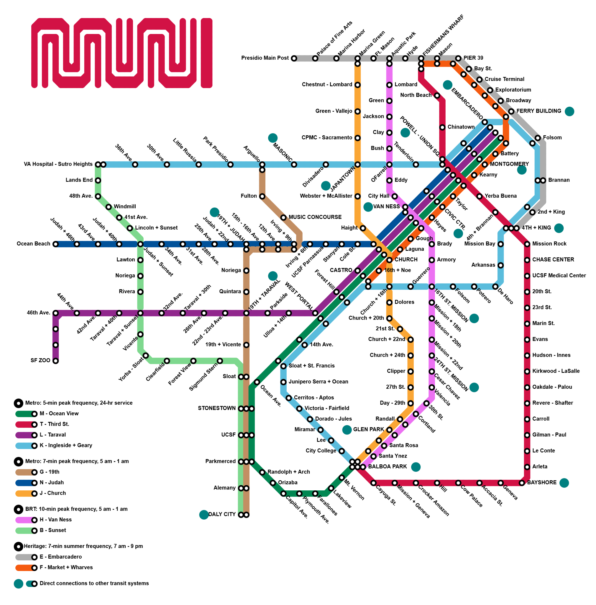
What is BART?
Service Area
Serves the broader SF Bay Area across Alameda, Contra Costa, San Francisco, San Mateo, and Santa Clara counties.
The System
- 5 rapid transit lines
- 50 stations
- 131 miles of track
- Fleet of 805 total vehicles
- 7th busiest rapid transit system in the US
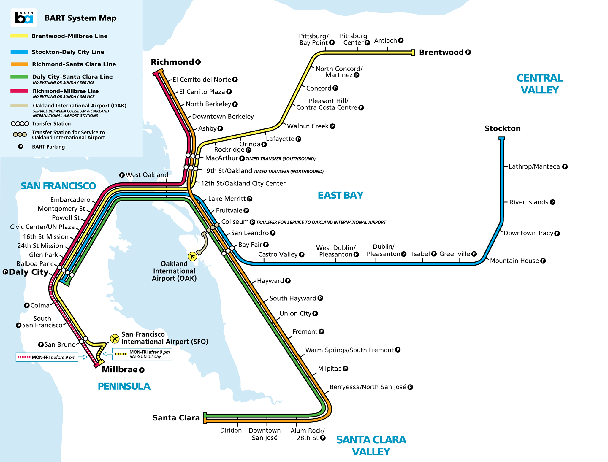
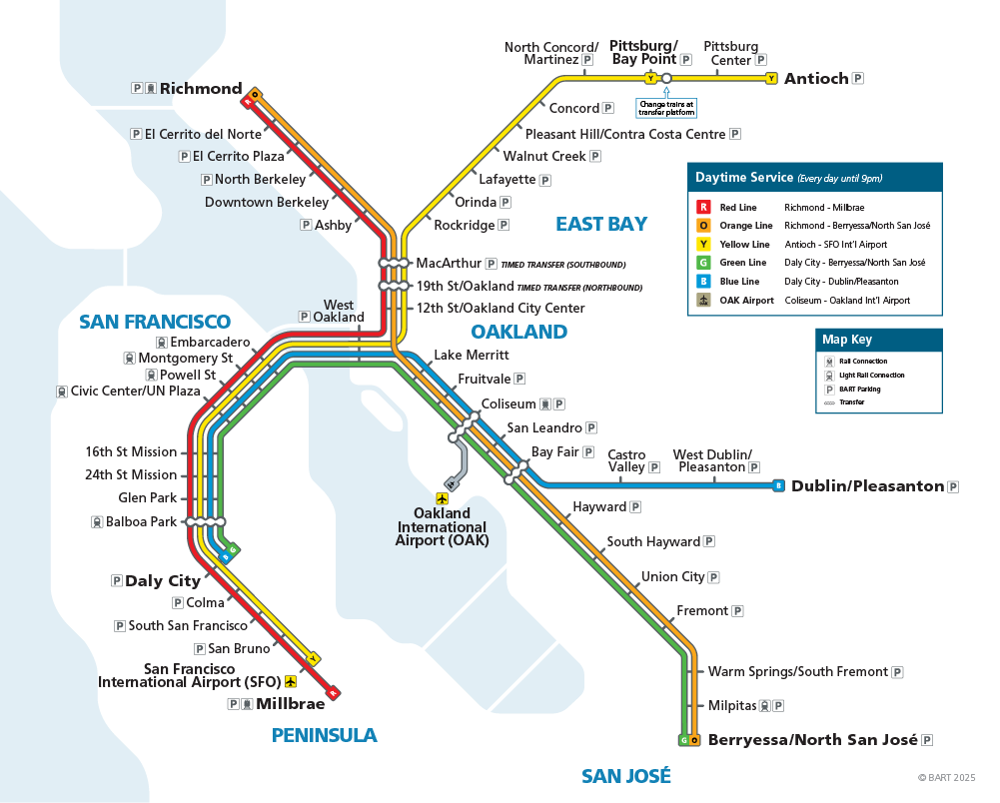
MUNI & BART Setbacks
BART
- Lost commuters after COVID
- Major revenue and funding challenges
- Ridership still far below 2019 levels
- Infrastructure aging simultaneously
MUNI
- Struggles to maintain citywide service
- Difficulty controlling costs
- Funding shortfalls threaten cuts
- Earlier service shutdowns planned
Common Impact
- Budget deficits on both systems
- Potential service cuts looming
- Fare increases coming
- Reduced reliability for riders
What Went Wrong?
The pandemic broke a funding model that was already fragile — and the riders haven't come back.
What Went Wrong?
The Core Problem
Ridership never fully recovered after COVID. Remote work permanently reduced peak commuter demand — the exact segment both systems depended on. BART was covering over 70% of its operating budget from fares before the pandemic.
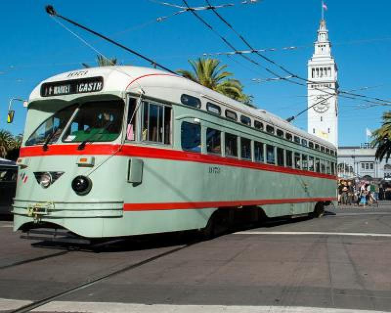
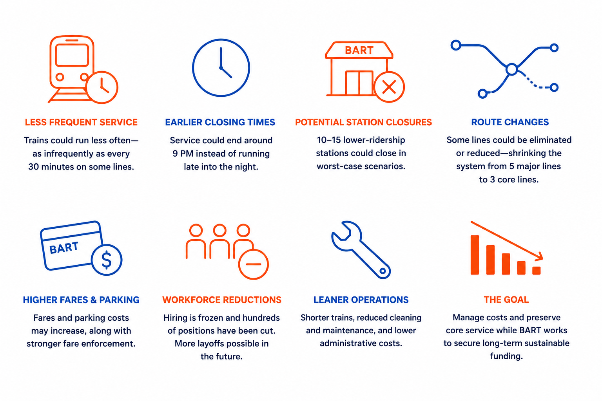
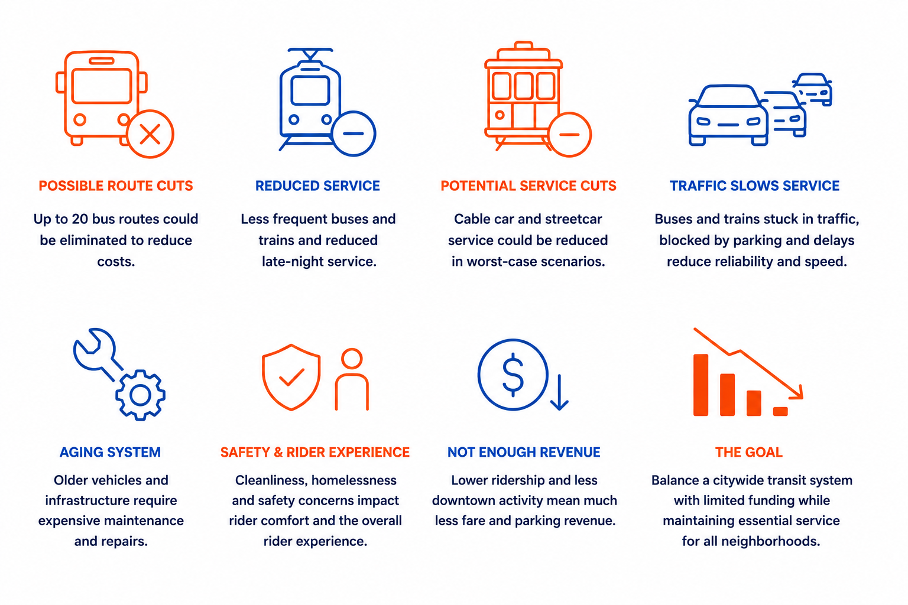
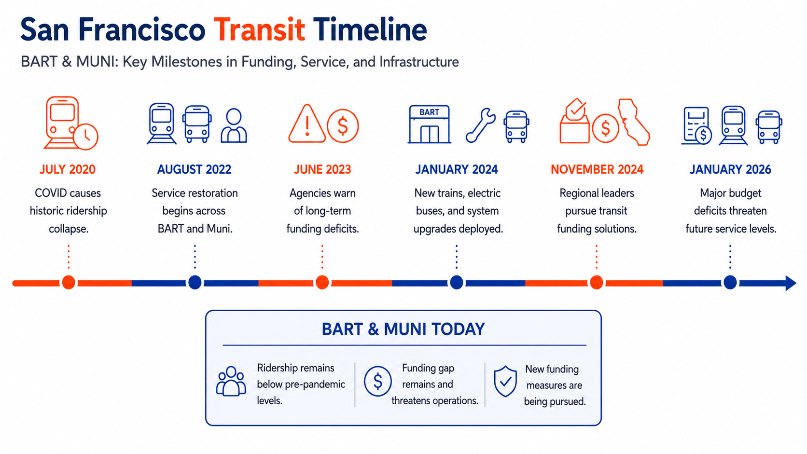
Impact on Riders
The proposed cuts would reshape daily life for hundreds of thousands of Bay Area commuters.
MUNI: Impact of Service Reductions
Route Eliminations
- Metro wait times doubled
- Off-peak service (9pm–midnight) cut by up to 60%
Historic Service Gone
- Cable cars suspended entirely
- F Market & Wharves historic streetcar line reduced or eliminated
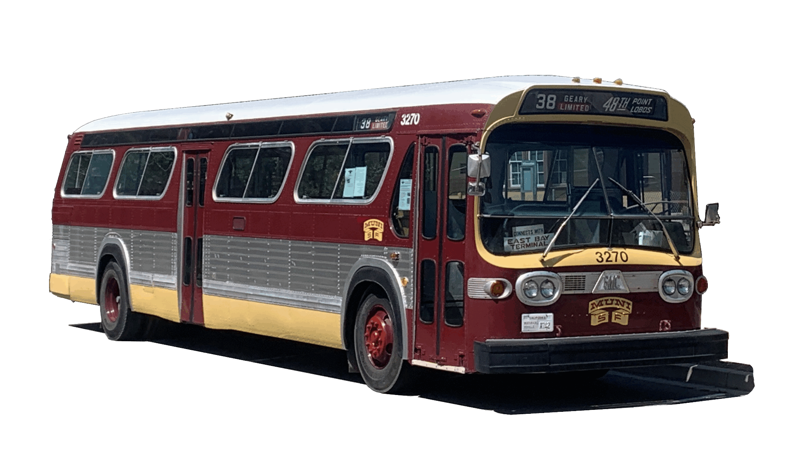
An aging MUNI fleet at risk under budget cuts
Vulnerable Riders Hit Hardest
Fare discounts for low-income, seniors, youth, and people with disabilities may be cut.
City-Wide Fallout
Essential workers — restaurant staff, security guards, night nurses — would struggle to commute.
BART: Service Cuts
Train Service
- 63% fewer service hours
- Red and Green lines eliminated
- Trains run every 30 minutes
- Service ends at 9pm
Station Closures
- Phase 1: 10 lowest-ridership stations closed
- Phase 2: Up to 15 stations
- Up to 25% of track miles removed
Cost & Pricing
- Fares and parking up to 50% higher
- Average fare rises to $7.26
Regional Impact
- Bay Bridge traffic up to 73% higher
- Riders shift back to driving
- Worsening regional congestion
Pricing
How MUNI and BART fares compare to NJ Transit and the MTA — and what rising costs mean for Boxcar's value proposition.
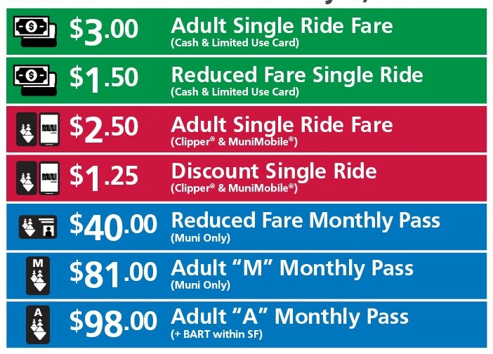
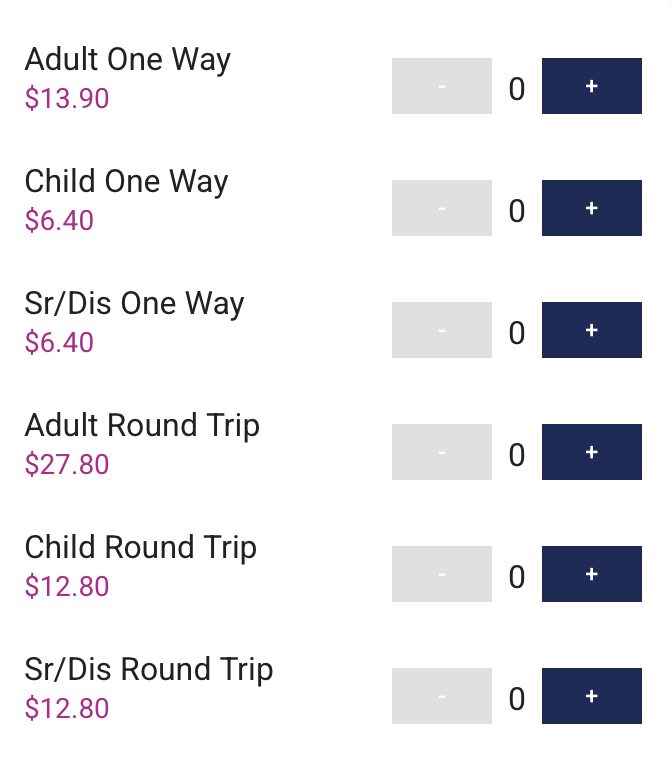
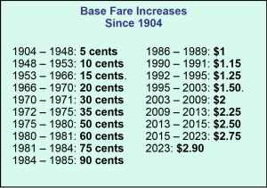
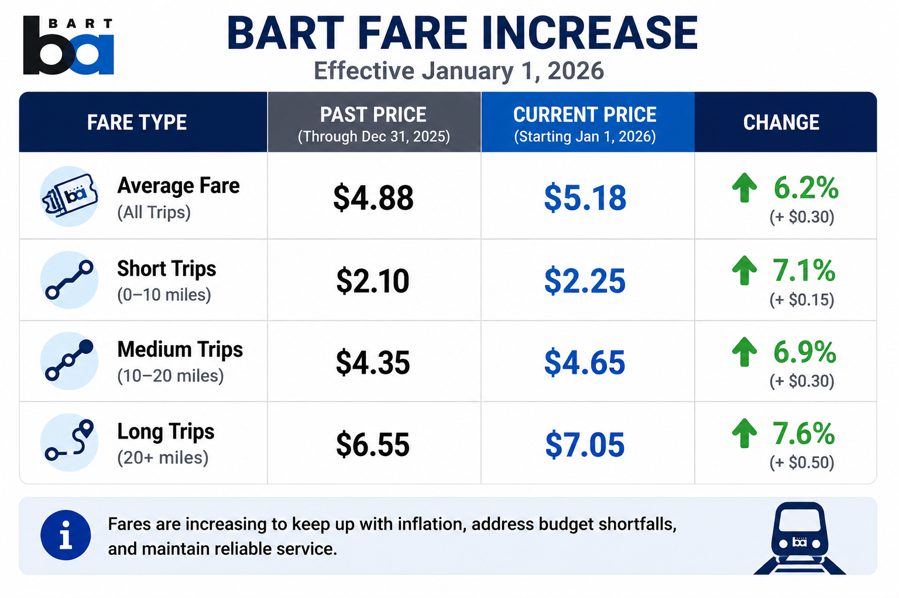
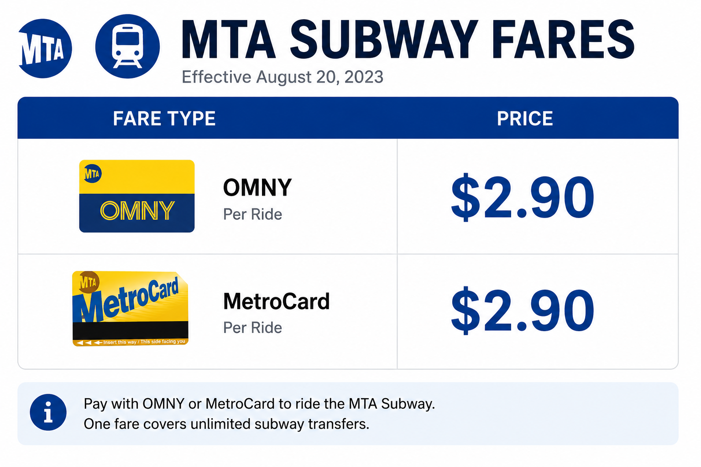
BART Routes
A line-by-line breakdown of every BART corridor — with ridership significance and Boxcar relevance.
Yellow Line Antioch → SFO / Millbrae
BART's Main Commuter Backbone
Connects East Bay suburbs to San Francisco and SFO. The busiest BART line and a critical regional transit corridor.
Why It Matters
- Busiest BART line
- Major commuter link to SF job centers
- Direct airport access (SFO)
- Critical regional transit corridor
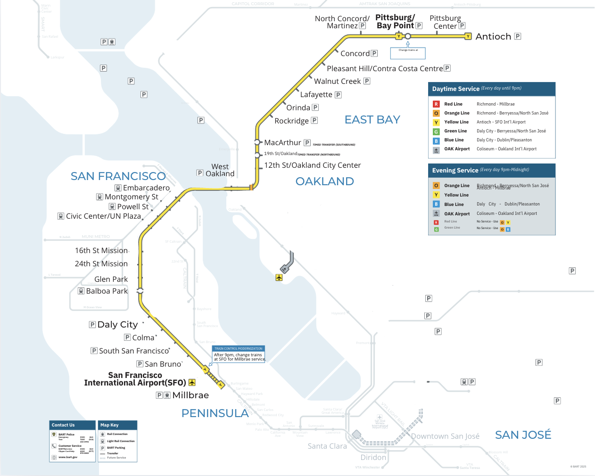
Blue Line Dublin/Pleasanton → Daly City
BART's East Bay Commuter Connector
Connects Tri-Valley suburbs to San Francisco. Route: Dublin/Pleasanton → Daly City.
Significance
- Key commuter route into San Francisco
- Links growing suburbs to downtown job centers
- Vital Transbay corridor for suburban office workers
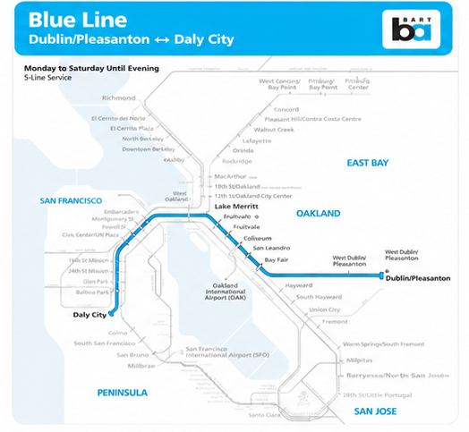
Orange Line Richmond → Berryessa / North San José
BART's East Bay & Silicon Valley Connector
Connects the northern East Bay to South Bay/Silicon Valley. Route: Richmond → Berryessa / North San José.
Why It Matters
- Direct connection between Oakland and Silicon Valley
- Serves major residential and employment centers
- Key transfer line within the BART network
- Does not directly enter San Francisco
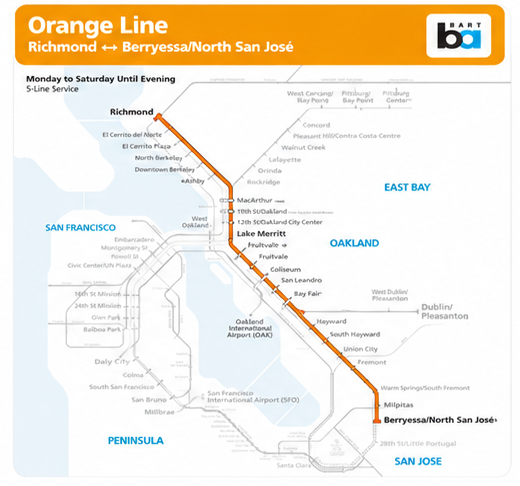
Green Line Daly City → Berryessa / North San José
BART's Direct SF ↔ South Bay Connector
Connects San Francisco directly to Silicon Valley using the Transbay Tube. Runs only during daytime service — ends after ~9 PM.
Why It Matters
- Direct connection between SF and Silicon Valley
- Important commuter route for tech workers
- Connects major residential and employment centers
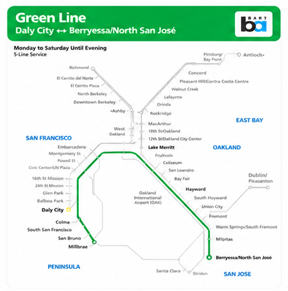
Red Line Richmond → Millbrae
BART's East Bay ↔ Peninsula Connector
Connects the East Bay directly to the Peninsula. Route: Richmond → Millbrae. Uses the Transbay Tube into San Francisco.
Why It Matters
- Direct connection between East Bay and Peninsula
- Important commuter route into downtown SF
- Provides airport access to SFO
- Does not run after ~9 PM
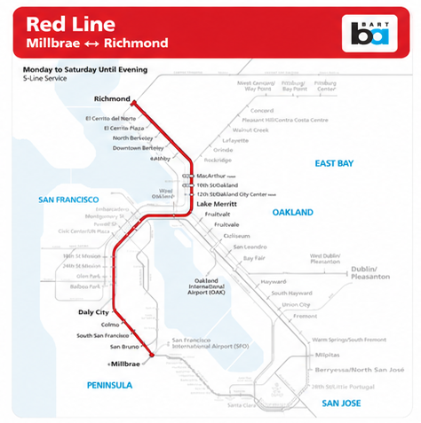
MUNI Routes
Light rail lines, high-ridership bus routes, and iconic historic services — each assessed for Boxcar relevance.
J Church — Balboa Park ↔ Embarcadero
Route
Balboa Park ↔ Embarcadero · Light Rail
Why This Line Matters
- Connects dense residential neighborhoods directly to downtown
- Provides an alternative to driving through SF's most congested corridors
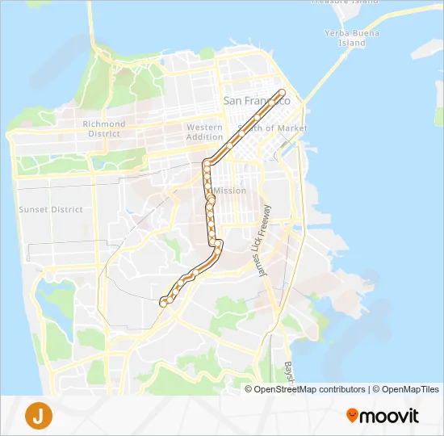
K Ingleside — Balboa Park ↔ Embarcadero
Route
Balboa Park ↔ Embarcadero · Light Rail
Why This Line Matters
- Provides direct access to City College of San Francisco
- Connects southern neighborhoods to major employment centers
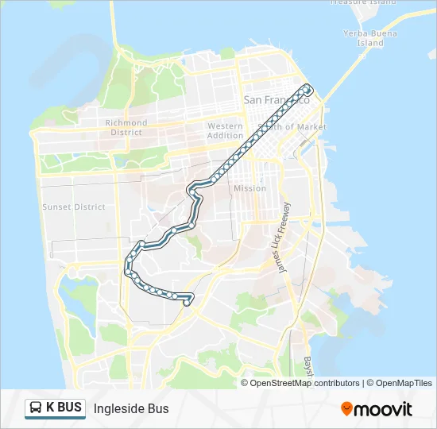
L Taraval — SF Zoo ↔ Embarcadero
Route
SF Zoo ↔ Embarcadero · Light Rail
Why This Line Matters
- Main rail connection for Outer Sunset residents
- Serves neighborhoods without direct BART access
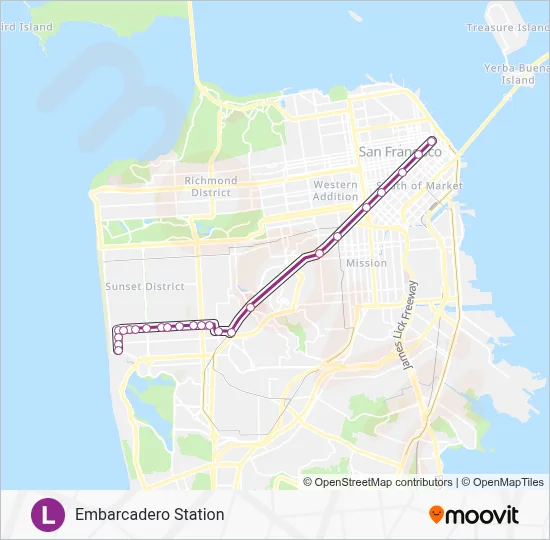
M Ocean View — Balboa Park ↔ Embarcadero
Route
Balboa Park ↔ Embarcadero · Light Rail
Why This Line Matters
- Primary connection for SF State students
- Links southern neighborhoods to downtown employment centers
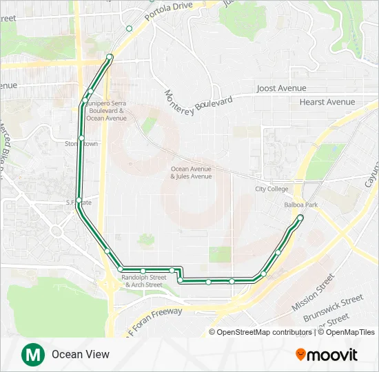
N Judah — Ocean Beach ↔ Caltrain Station
Route
Ocean Beach ↔ Caltrain Station · Light Rail
Why This Line Matters
- Highest-ridership Muni Metro line
- Connects western San Francisco to major job centers
- One of the city's most important commuter corridors
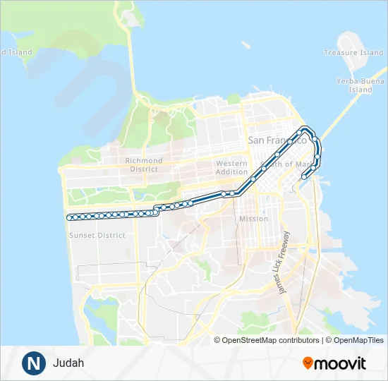
T Third — Sunnydale ↔ Chinatown
Route
Sunnydale ↔ Chinatown · Light Rail
Why This Line Matters
- Connects historically underserved neighborhoods
- Provides access to growing Mission Bay employment centers
- Important route for UCSF hospital workers
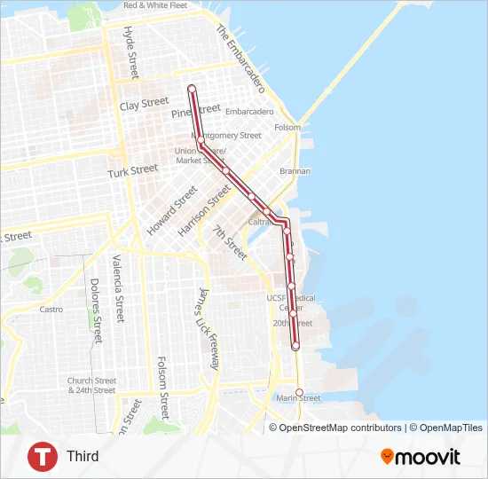
38 Geary / 38R — Richmond District ↔ Downtown
Route
Richmond District ↔ Downtown · Bus
Why This Line Matters
- Highest-ridership bus route in San Francisco
- Primary east-west transportation corridor
- Connects thousands of residents to downtown jobs daily
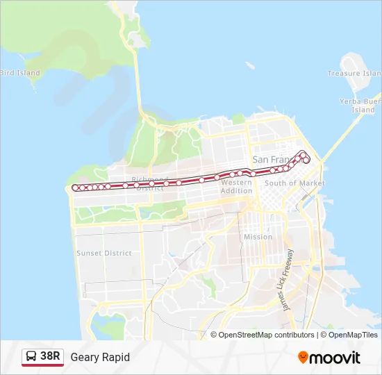
14 Mission / 14R — Mission District ↔ Downtown
Route
Mission District ↔ Downtown · Bus
Why This Line Matters
- One of the busiest routes in the city
- Essential transportation for workers without cars
- Critical for late-night commuting
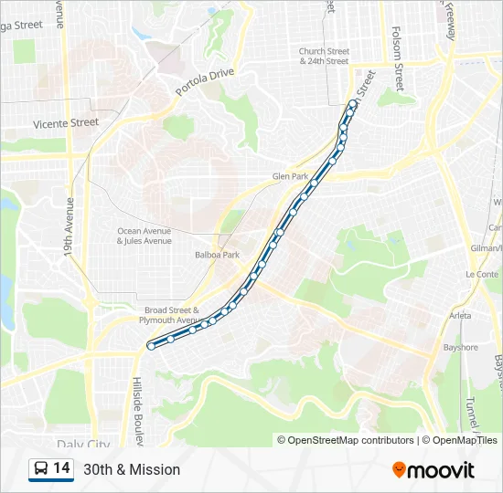
22 Fillmore — Bayview ↔ Marina District
Route
Bayview ↔ Marina District · Bus
Why This Line Matters
- One of the most important north-south routes in SF
- Links neighborhoods that otherwise require transfers
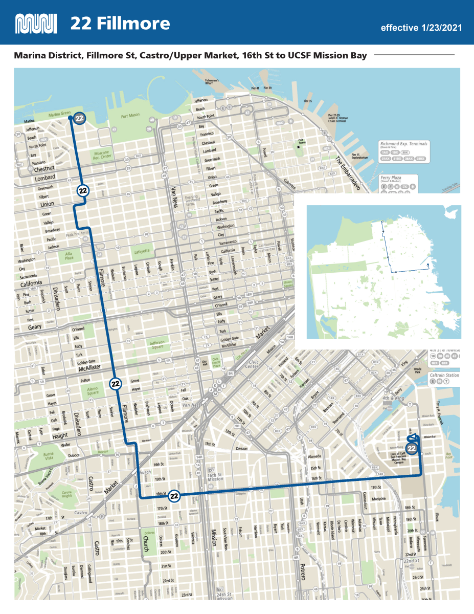
49 Van Ness / Mission — Mission ↔ Northern Waterfront
Route
Mission District ↔ Northern Waterfront · Bus
Why This Line Matters
- Provides an important north-south transit spine
- Supports both commuter and service-industry travel
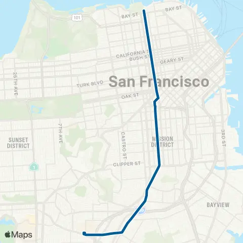
5 Fulton / 5R — Ocean Beach ↔ Downtown
Route
Ocean Beach ↔ Downtown · Bus
Why This Line Matters
- Primary east-west connection through northern San Francisco
- Provides access to major attractions
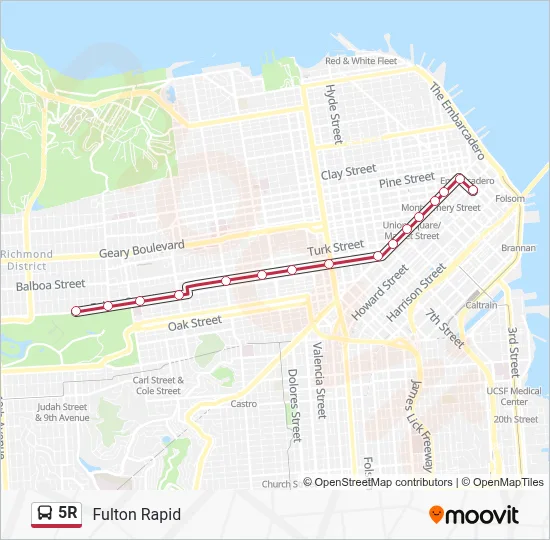
29 Sunset — Sunset District ↔ Southern SF
Route
Sunset District ↔ Southern San Francisco · Bus
Why This Line Matters
- Critical neighborhood connector
- Supports schools, shopping centers, and residential communities
- Important for residents without direct rail access
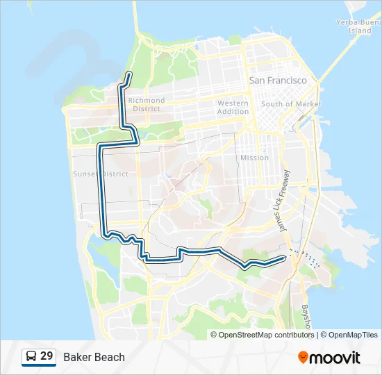
Cable Cars — Powell-Hyde · Powell-Mason · California St
Routes
Powell-Hyde · Powell-Mason · California Street
Why This Line Matters
- Iconic symbol of San Francisco
- Supports tourism economy
Current Status
Operating — but at risk under severe budget-cut scenarios.
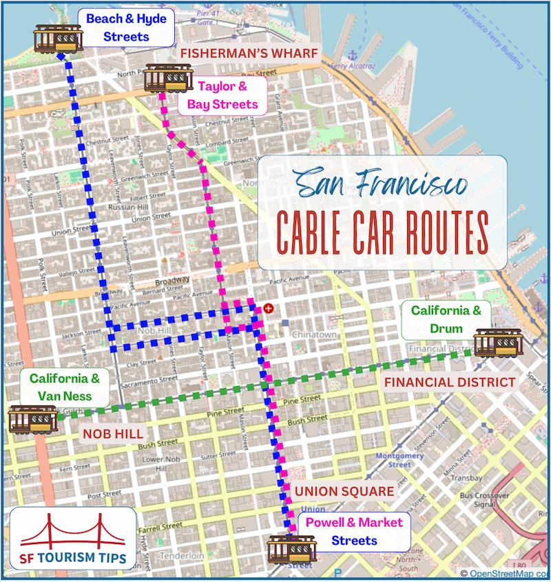
F Market & Wharves — Castro ↔ Fisherman's Wharf
Route
Castro ↔ Fisherman's Wharf
Why This Line Matters
- Connects major tourist destinations
- Supports downtown and waterfront businesses
Current Status
Operating — but at risk under severe budget-cut scenarios.
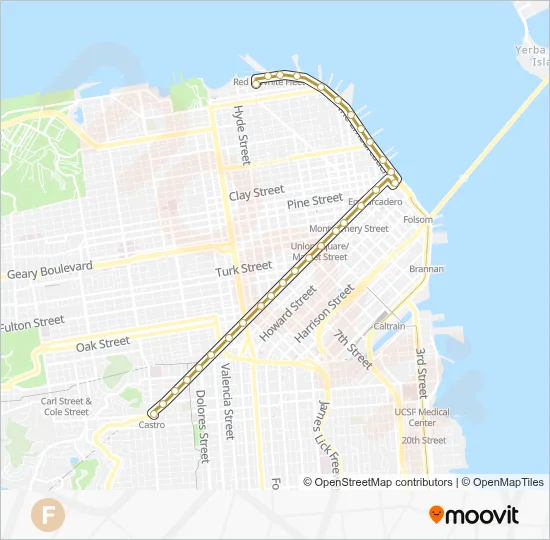
Daily Riders
Average weekday ridership across MUNI and BART — the baseline that budget cuts will erode.
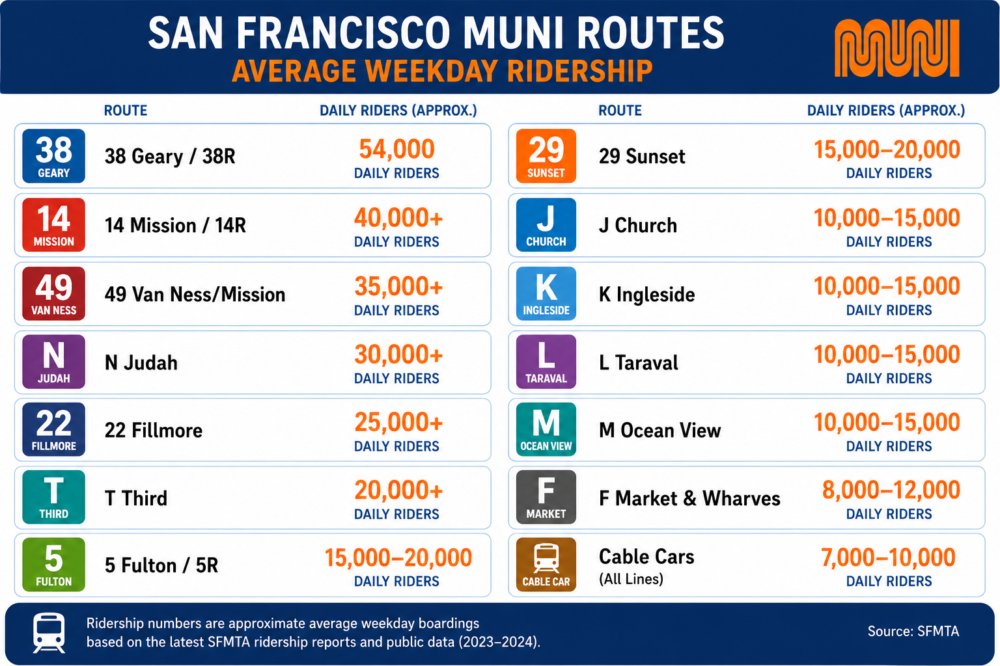
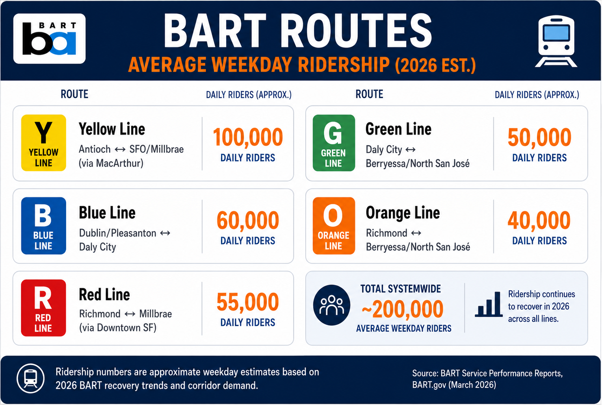
Boxcar Appeal
Where does a premium commuter service fit in a market that drives more, commutes less, and is losing its transit backbone?
Why San Francisco Is Different Than NYC
| Factor | NYC | San Francisco | Boxcar Implication |
|---|---|---|---|
| Transit Culture | High | Medium | More car-comfortable riders to convert |
| Driving Culture | Low | High | Harder switch from car; comfort & reliability matter more |
| Remote Work | Low | High | Fewer 5-day commuters; target 3-day hybrid patterns |
| Parking Costs | Medium | High | Strong financial incentive to ditch the car |
Appeals to Boxcar: MUNI & BART
Yellow Line (BART)
Brings commuters directly into Embarcadero and Montgomery Street — home to many big banks and financial companies.
Finance target group
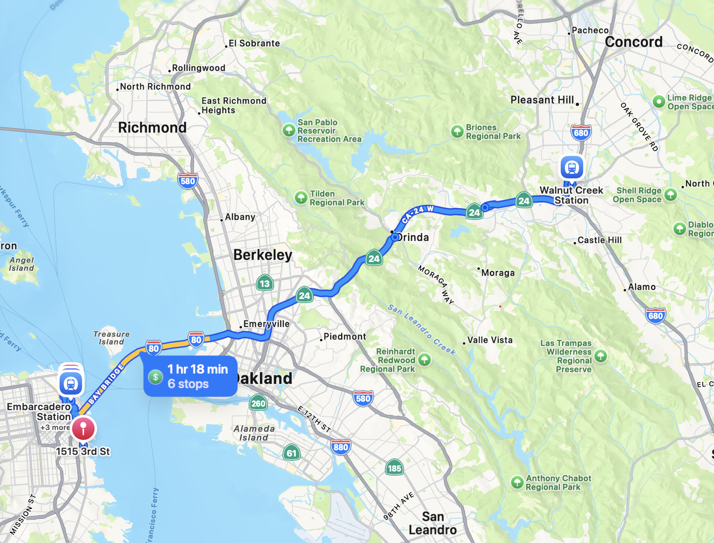
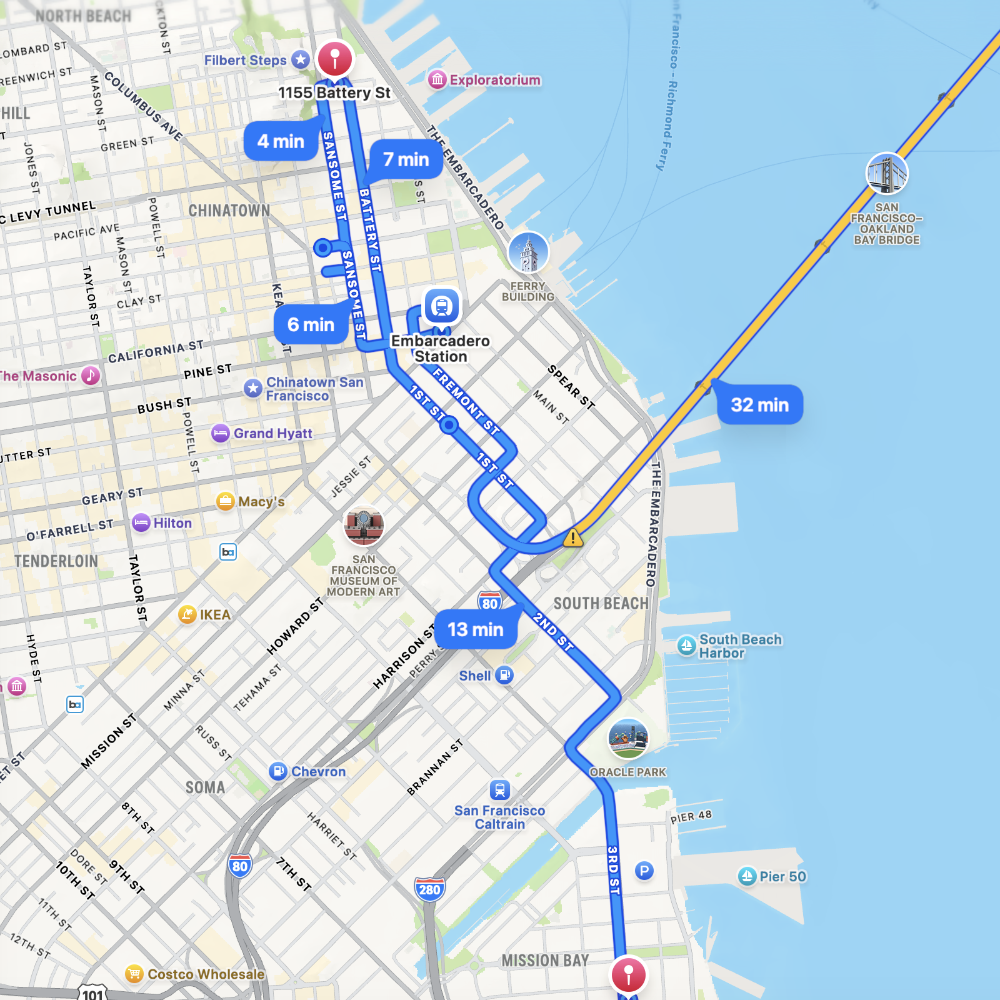
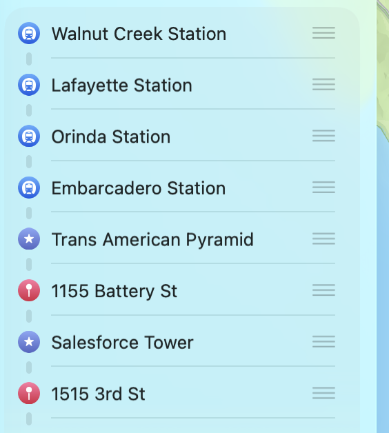
Target Pickup Markets
Target Drop-off Locations
Embarcadero Station
Walking distance to the Financial District
Transamerica Pyramid
Heart of the Financial District
1155 Battery Street
North of Financial District / Waterfront area
Salesforce Tower
Equivalent of One Vanderbilt / Hudson Yards — the heart of SF corporate real estate
1515 3rd Street
Emerging innovation districts — Mission Bay / South Beach corridor
Appeals to Boxcar: MUNI & BART
Key Insight — Green Line (BART)
Brings commuters directly into Silicon Valley — the tech target group.
This line is eliminated under Jan 2027 cuts — leaving tech workers without a direct option.
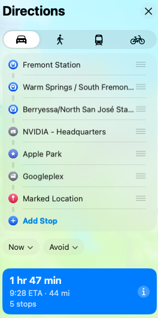
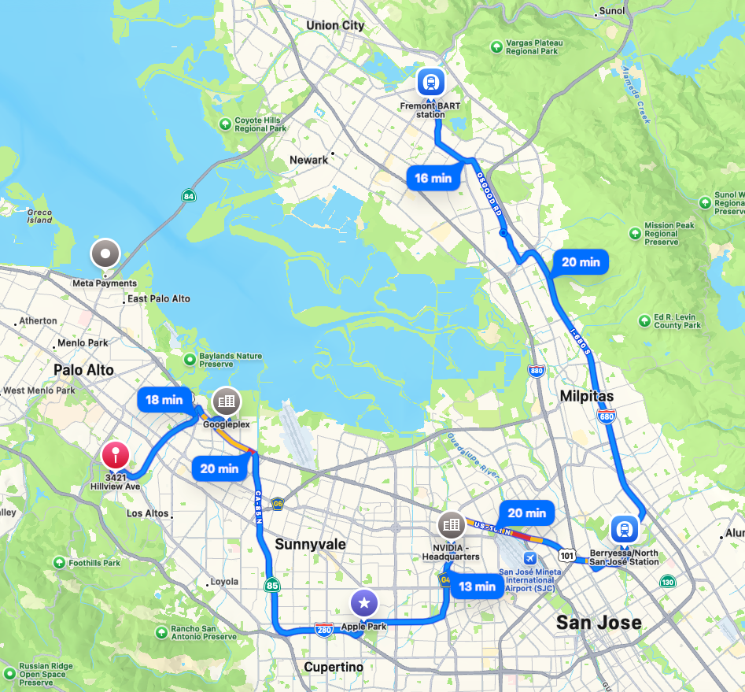
Target Pickup Markets
Target Drop-off Locations
NVIDIA Headquarters
Hub of tech and research facilities
Apple Park
12,000+ employees · Limited public rail access
Googleplex
20,000–24,000 employees · Dedicated transit plazas
Stanford Research Center
Multi-employer tech hub · Captures 150+ companies
Parking Opportunities — The Peninsula
Target Commuter Profile
Wealthier tech and finance professionals who prefer taking Caltrain over buses. High-income commuters willing to pay a premium for a guaranteed parking spot.
Target Stations
- Millbrae Intermodal Station
- San Mateo Station
- Palo Alto Station
Partnership Opportunity
Partner with churches, private banks, or office buildings near stations.
Example: Comerica Bank (Millbrae Branch)
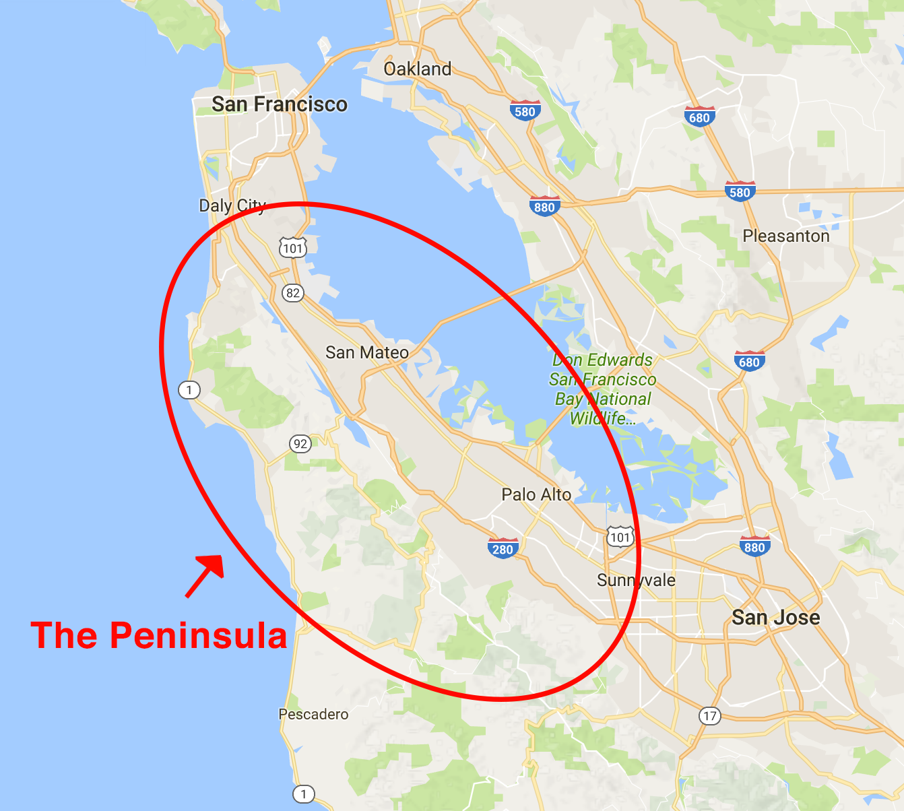
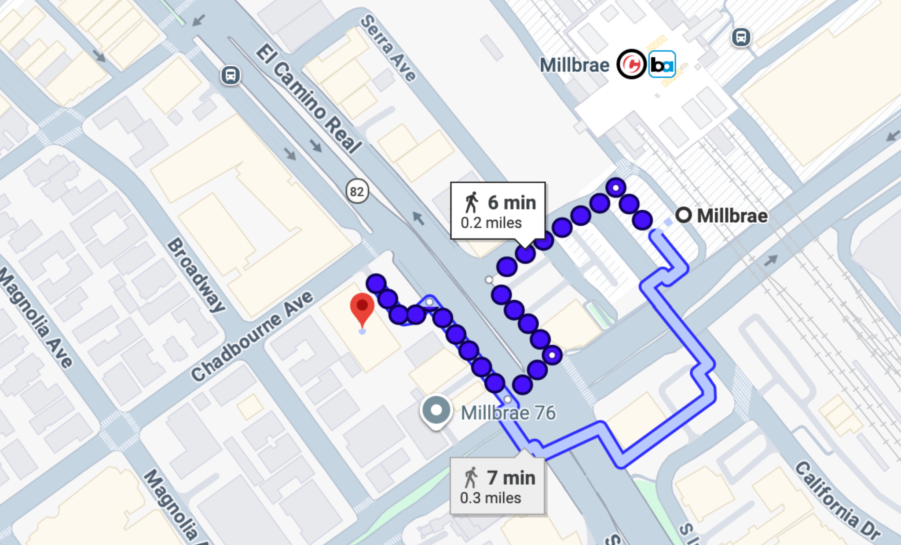
Parking Opportunities — East Bay Churches
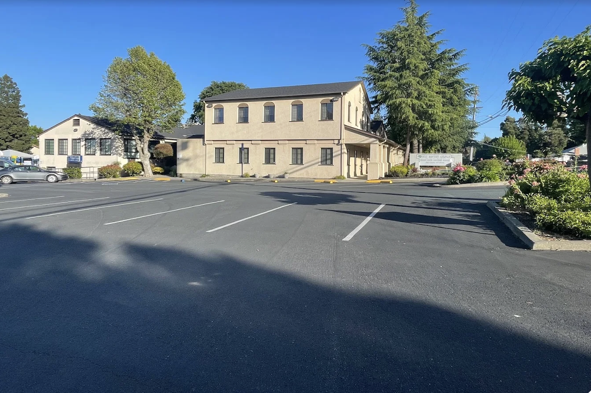
St. Paul's Episcopal Church
0.5 miles away from Walnut Creek Station · 13 min walk
stpaulswc.org
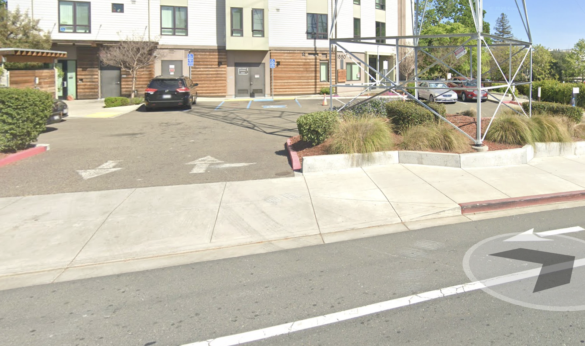
First Baptist Church Walnut Creek
0.8 miles away from Walnut Creek Station · 18 min walk

Christian Science Church, 24 Orinda Way
0.3 miles away from Orinda Station · 9 minute walk
Potential Boxcar Opportunity by Corridor
Yellow Antioch → SF · 1h 15m driving · 1h 30m on BART
Long suburban commute times · High-income East Bay base · Direct commute into SF · Growing rider frustration with reliability · Strong demand for premium alternatives
Blue Dublin → SF · 45m–1h driving · 50–60m on BART
Tri-Valley high-income communities · Heavy Transbay commuter dependence · Direct SF access · Growing congestion and reliability concerns
Orange Richmond → San José · 1h 15m driving · 1h 30m on BART
Does not serve SF directly · Connects East Bay and Silicon Valley · Strong tech and corporate commuter market · Long commutes create premium opportunity
Green SF → San José · 1h driving · 1h 20m on BART Eliminated Jan 2027
Direct SF ↔ Silicon Valley · Strongest Boxcar opportunity — line is being eliminated, leaving tech workers without a direct option · High-income demographics
Red Richmond → Millbrae · 45m driving · 1h on BART Eliminated Jan 2027
East Bay ↔ SF + SFO access · Professional and corporate commuter base · Long cross-bay commute times · High-income suburban demographics